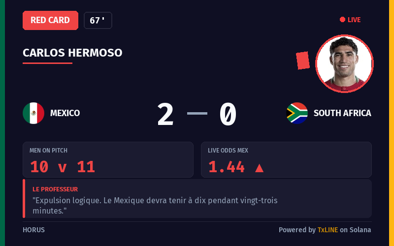
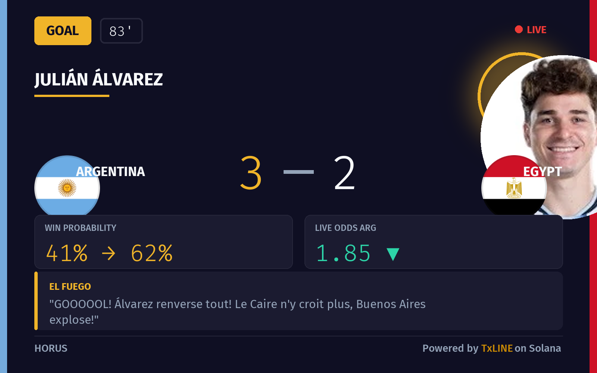
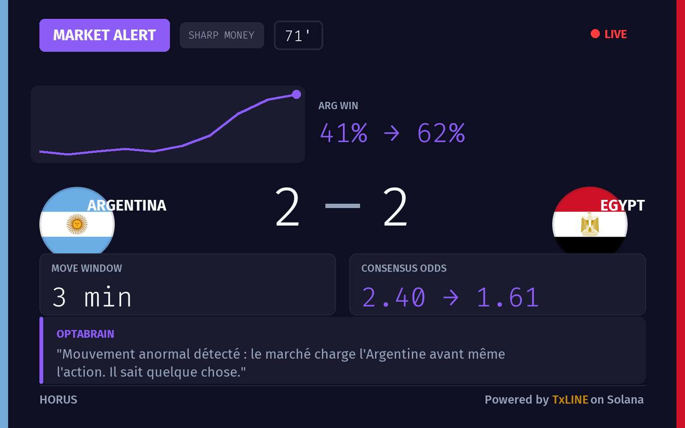
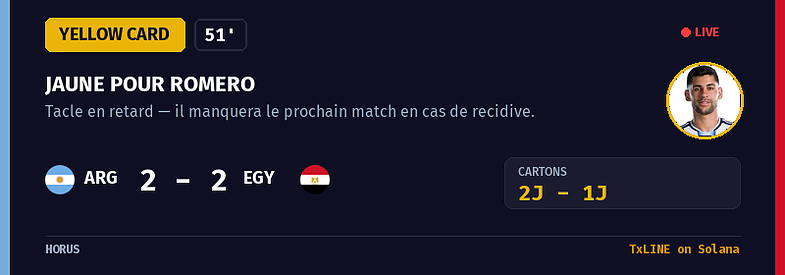
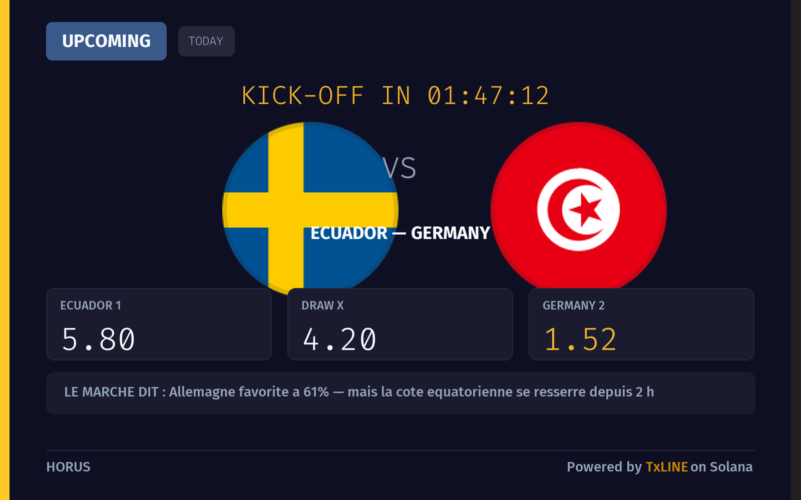
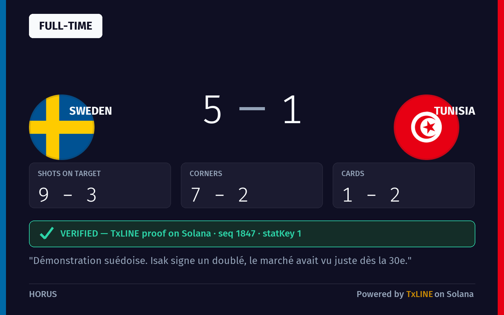
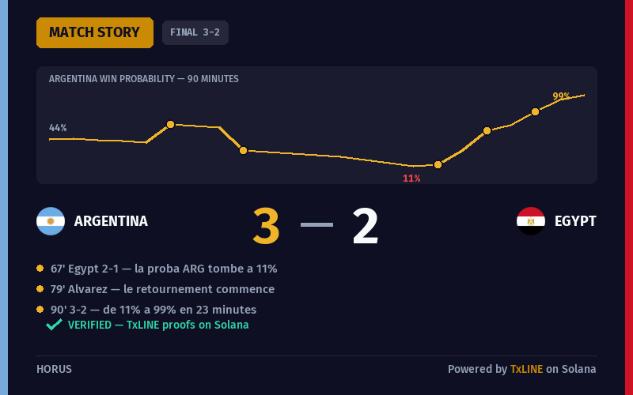

HORUS is a pundit that turns TxLINE's real-time match data into instant cards: goals, cards and market swings, with the betting market's read on every moment — verified on Solana.



Every feature is driven by the live feed. Nothing is invented, nothing is generic.
Pick your language at first contact — Fon, Yorùbá, Swahili and more. Every card and answer speaks it.
Goals, red & yellow cards, VAR, kick-off and full-time — each with the real win probability and 1X2 odds at that minute.
El Fuego, The Professor and OptaBrain narrate the match — alive, never generic, always fact-locked.
Talk to HORUS in plain language. It answers only from the live feed — it can't invent a score.
Take a position and get paid at the final whistle — real Solana devnet transactions, never the TxL token.
/verify proves any score against the TxLINE Merkle root anchored on Solana. Trustless by design.
A dramatic dark visual system with a spotlight-gold accent, Fira Code numbers and player portraits — the same cards you receive live in the chat.




130+ options. Everything after flows through it.
Live, upcoming or finished — the whole championship.
Watch at your pace; cards arrive as the market reacts.
Stake on-chain, settle at the whistle, prove the score.
The demargined consensus is the soul of HORUS — a clean, bookmaker-margin-free win probability, tick by tick. Scores, odds, phases and cryptographic proofs all come straight from the feed. Match streams are cached locally, so HORUS stays alive even when the feed goes dark.
Open the bot, pick your language, and watch a match come alive in cards — with the market's read on every moment.
Open @hoorusbot →